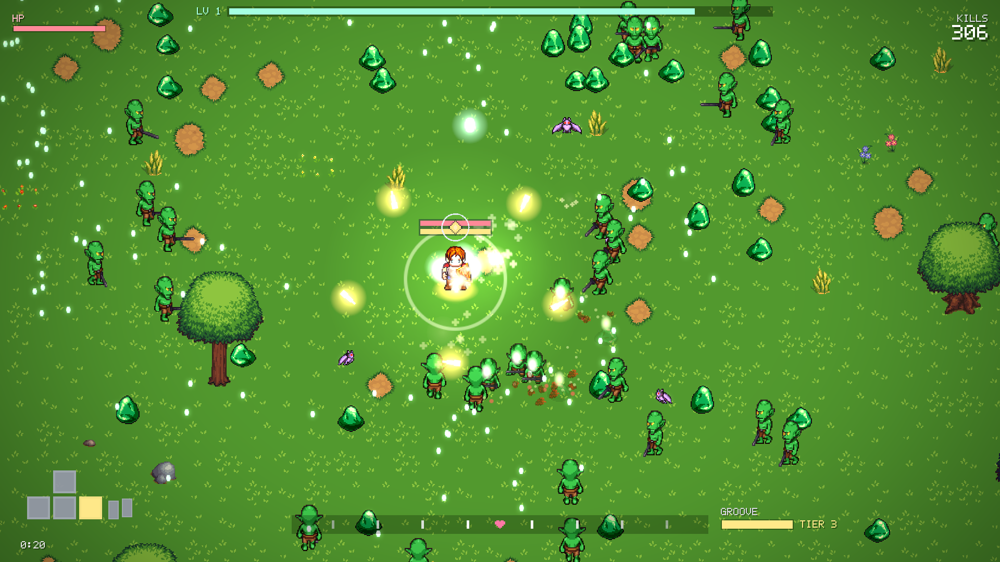
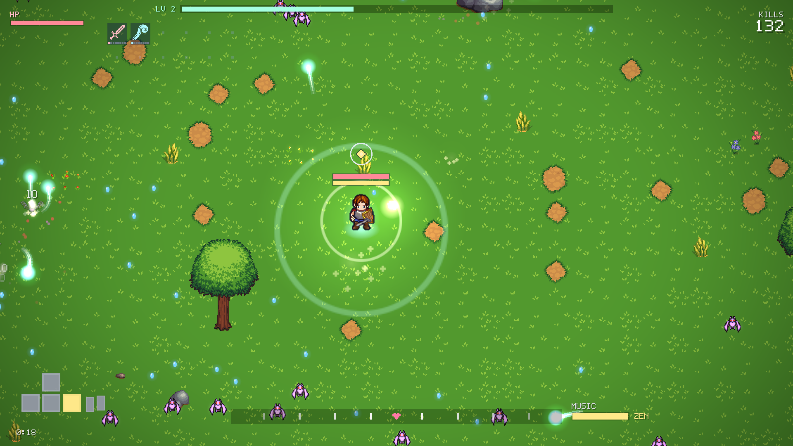
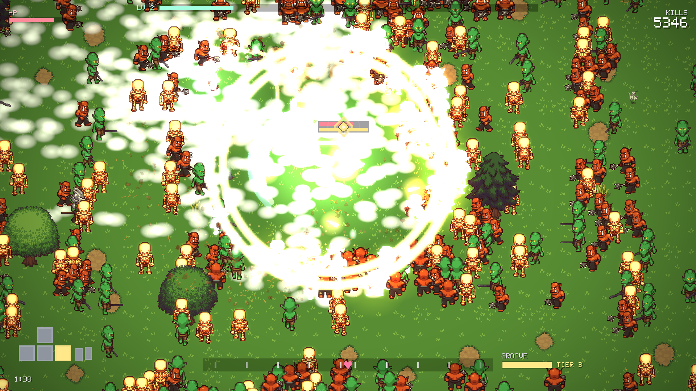
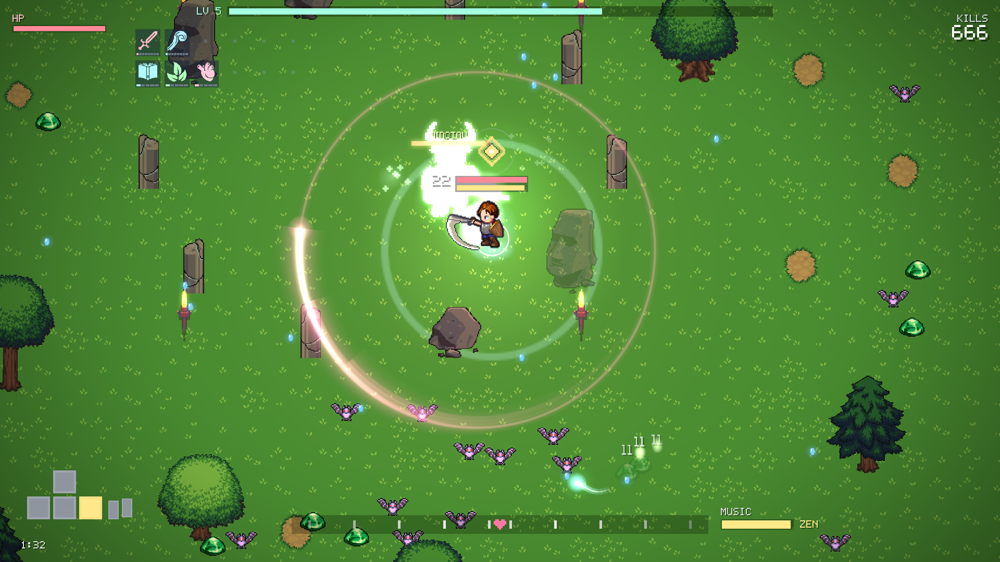
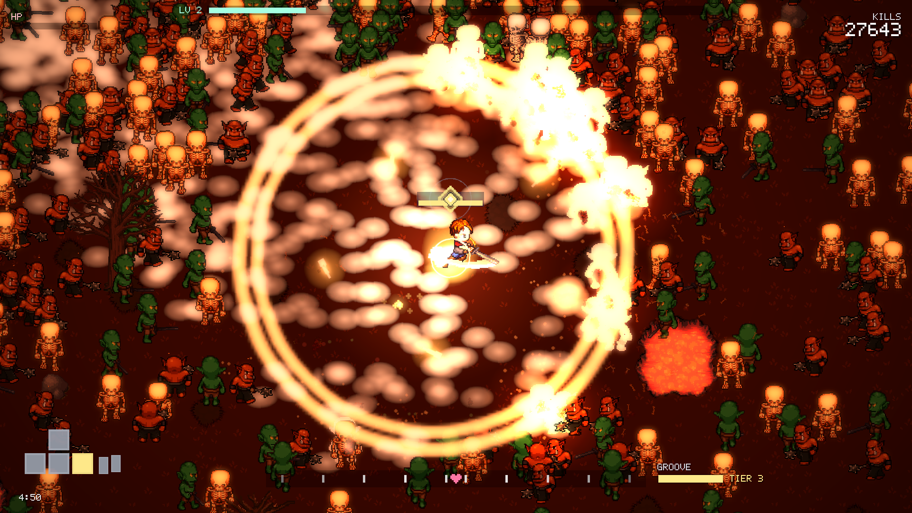
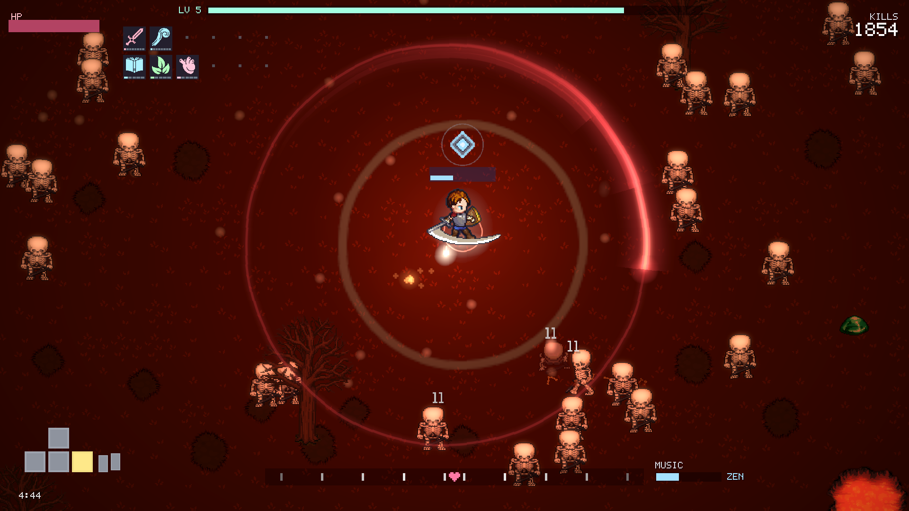
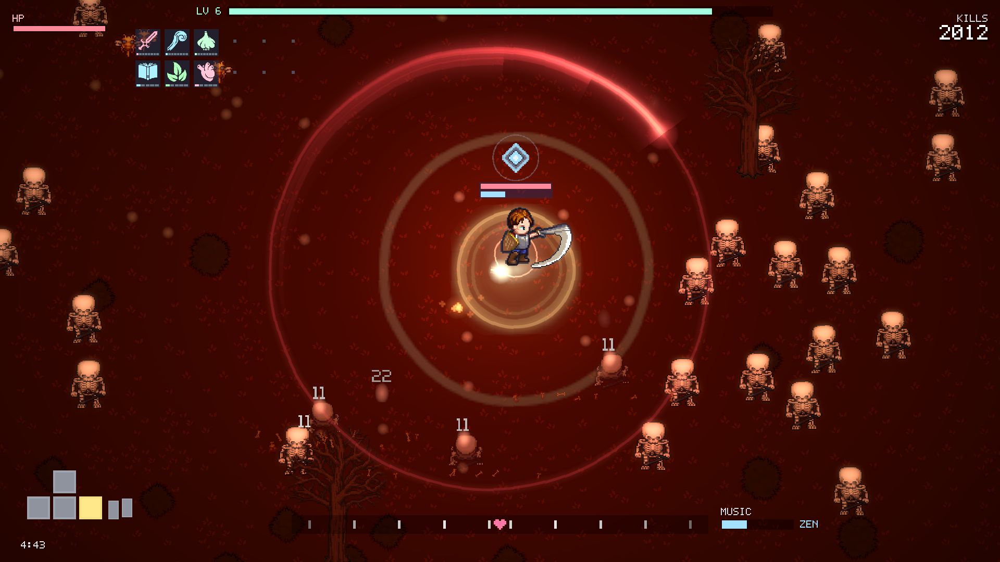
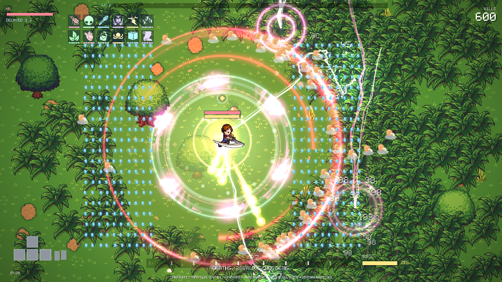
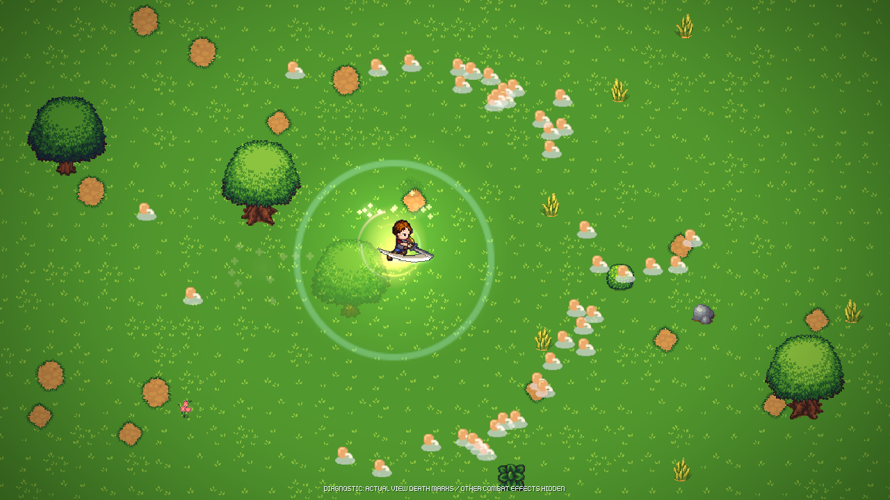

Restore the musical power fantasy
Earlier native reference and the final restored source. These are silent offscreen stills from real timestamped Hang Low music. They show presentation; they do not certify movement rhythm, audio, subjective feel or matched balance. Inventories and control helpers differ intentionally.
Game feel comes first. Standing-still losses remain diagnostic. The full active-player sweep passes; see qualification and limits.
Opening · song20s

6a00a47f · normal damage, earlier rich arsenal
fe260cfd · normal damage, sword-only start and actual first cardEarly encounter · song98s

6a00a47f · normal damage; source look and pressure differ
fe260cfd · DAMAGE EXEMPT diagnostic · real minotaur/standing-stones stagingNear five minutes · song290s

6a00a47f · normal damage · HERO HAS FALLEN
fe260cfd · normal damage · HERO HAS FALLEN; scripted directions are not a positioning playerContinuing presentation · damage-exempt diagnostic

fe260cfd · song290s, run283.75s · DAMAGE EXEMPT · ordinary first-card control helper. No natural survival claim.Bounded density and aftermath

Injected max build, actual kills/400 gems; zero-XP40HP diagnostic enemies. Hero, HP and beat indicator stay foreground.
Actual view-owned catalog marks isolated by hiding actors, gems and other combat effects. The pool is96 marks for20 held-world seconds.Full legal-path, exact replay, survival, PCM and performance results are in the evidence report. Speaker/System and human playtest items remain explicitly pending.